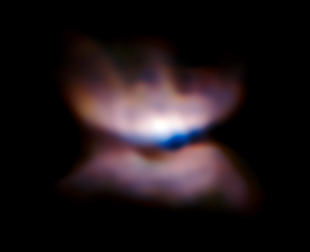
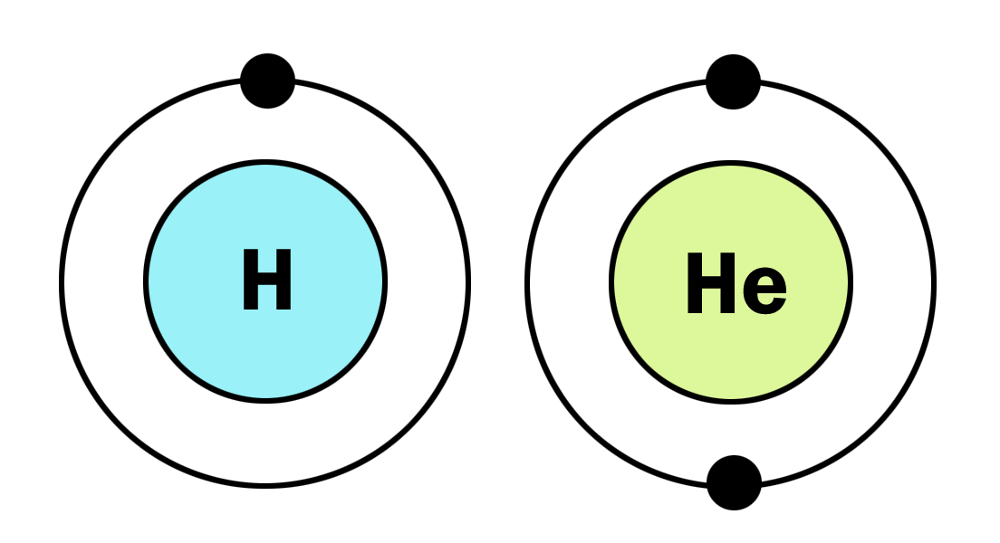

Links
About me

Welcome to my website! My name is Zhuo Chen (陈卓). I was born and raised up in Wuhan, the capital city of Hubei Province, China. I got my bachelor degree in Engineering Mechanics in Tongji University, Shanghai. I switched to Astrophysics in 2013 in University of Rochesteri and joined Adam Frank's computional astrophysics group. In 2018, I graduated from the University of Rochester. I am now a CITA national postdoctoral fellow at the University of Alberta in 2018.
Reach me at zc10@ualberta.ca
Past projects
-

Planetary Nebulae
Study the dynamics in formation and morphology of planetary nebulae.
-
AGB Binaries and Accretion Discs
Binary systems with giant stars may also have accretion discs. The dynamics of both stars will affect the evolution of the binary system. They are probably the progenitors of common envelope, type Ia supernovae, luminous-red-novae and planetary nebulae.
-

AstroBEAR
I develop the numerical methods and modules of the code AstroBEAR. I added ray-tracing algorithms of radiation transfer and molecular cooling.
-

Riemann solver with realistic equation of state
Solve the equation of state first, use tabulated equation of state to find hydrodynamic solution.